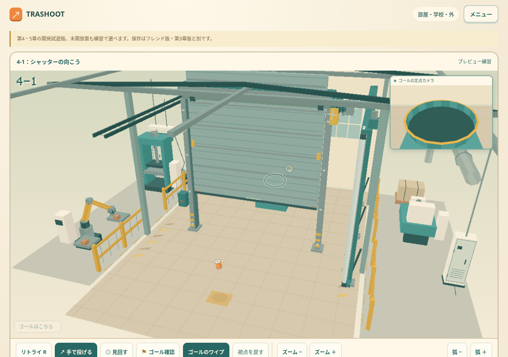
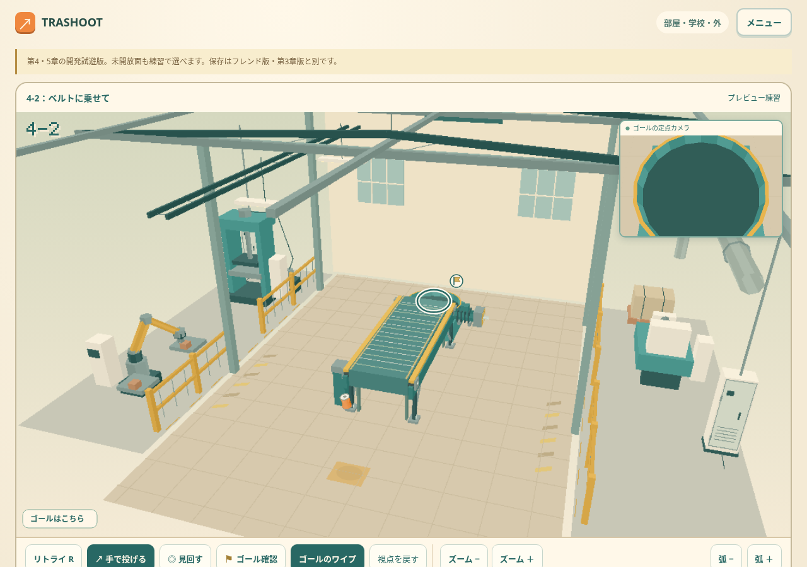
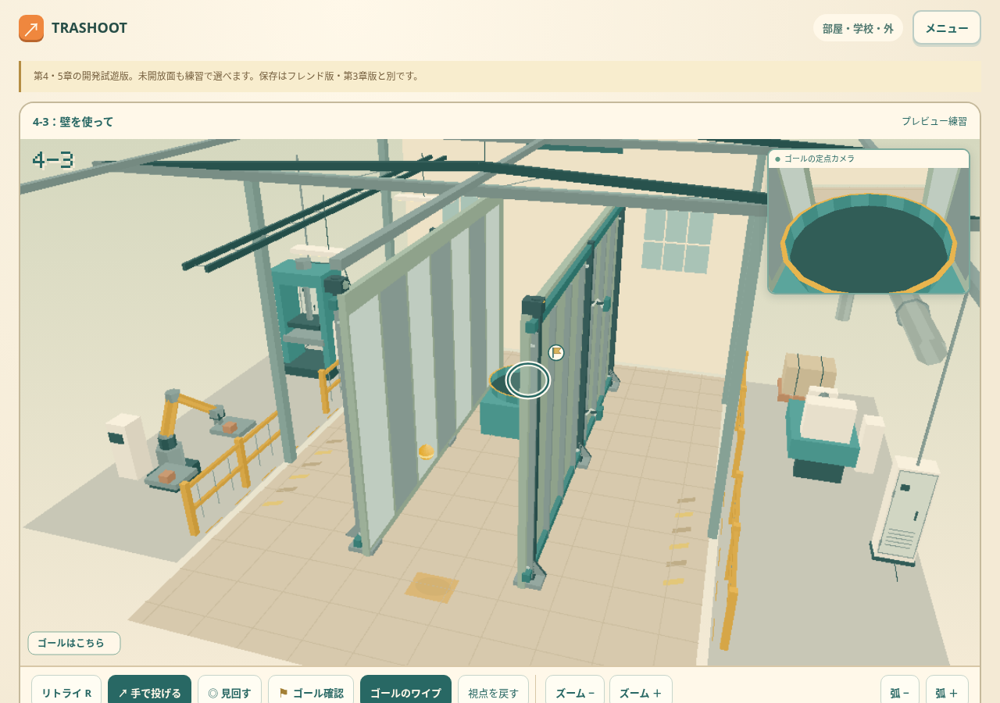
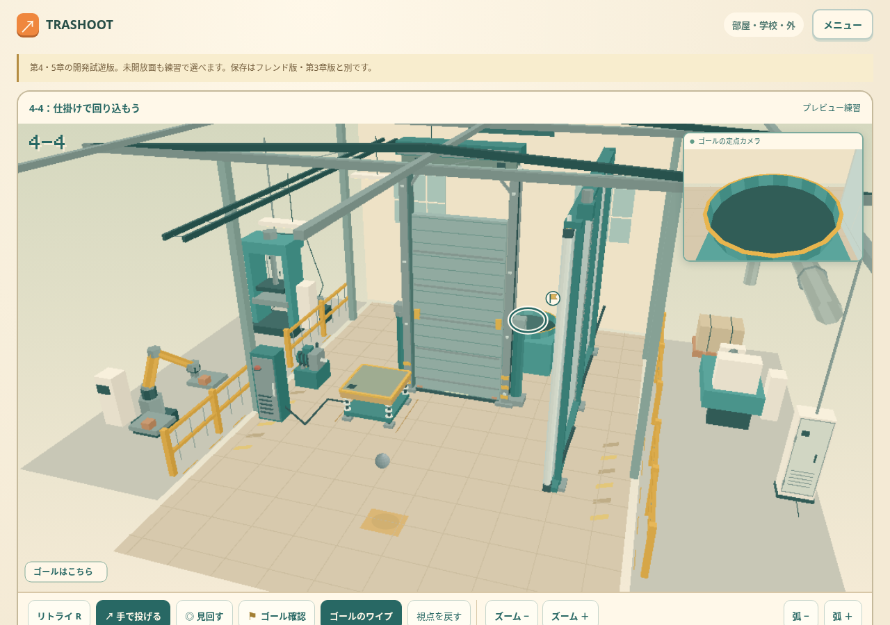

TRASHOOT · CHAPTER 4
同じ回収ボックスへ、直接投げても機械を使ってもクリア。右の反射ガイド、ベルトの流れ、圧力板を見て、自分の入り方を探そう。

4-1
シャッターが開く瞬間を狙うか、右の反射ガイドで回り込むか。

4-2
ベルトに載せて箱まで運んでもらうか、高い弧で直接入れるか。

4-3
直投げも、1バウンドも、左右をつなぐ2バウンドも。同じ箱へ入ればクリア。

4-4
1球目で圧力板を押して扉を開けるか、右のガイドを使って1球で回り込むか。
Rキー、または画面の「リトライ R」で投げ直せます。PCは右ドラッグで見回し、下のボタンでズームできます。画像は今回のゲーム画面です。